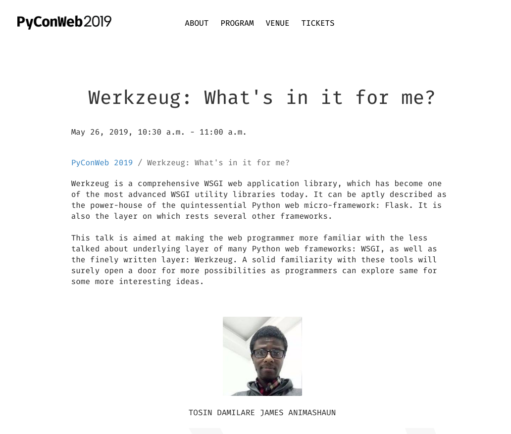

Sun 07 April 2019 | tags: talk, conference, presentation, werkzeug, python, pallets, pocoo, public speaking, armin ronacher, München, Munich, Germany, -- (permalink)
I am not big on festivities or rituals, but this year's Feb-14th day presented me a wonderful "opportunity", which I was quick to seize by the throat. It was an early early-bird-tickets announcement. But more importantly, it was also a notification of the closing window on CFPs within the 24 hours to follow.
For some reason, I felt quite optimistic about a possible chance to speak, and quickly put together the draft for a talk proposal. To get someone to review, I hit Pallets Projects' Discord and reached out to davidism, who was kind enough to indulge me. A few minutes on and I was good to go; and so it was that I put-in something of a nick-of-time submission.
Next, I informed the lady, as I am wont to do. With our phalanges kept crossed, we wrapped up in cloaks of hope. I received the first feedback some 12 days later.[1] Then, in another 11 days (on March 09), the notification about the talk's selection arrived. Woot!

This means that come 26th May, 2019, I will be given some 30 minutes before an audience at PyConWeb, for a presentation on one of the nifty tools contained in the arsenal of Pallets Projects: the Werkzeug library.
Werkzeug, which I'd much rather refer to as the WSGI swiss-army knife, is one of those brilliant pieces of software out there that have enjoyed little attention. Permit me to blame the unpopularity of Werkzeug on the fame of Flask, which is what most people interface with.
Armin Ronacher, whom I admire so much, and who, over the years, has created an army of useful tools across a spectrum of language ecosystems, created Werkzeug in 2007. This was three years before the birth of Flask, which, built on Werkzeug, has become the quintessential Python microframework for the web.
My talk is titled: Werkzeug: What's in it for me? It will take the audience on a subliminal, revelatory journey that will unearth the most kept secrets of the "underweb". Okay, not quite. ;) You can pretty much think of it as a simple introduction to the good parts of the Werkzeug toolset.
If you have ever touched Flask, then you have certainly used Werkzeug. But the distinction must be made that, while Flask is a framework, Werkzeug is a library. While you might interact with the Flask API as a developer, Flask talks to the web server quite easily by leveraging the Werkzeug API.
Werkzeug, on the other hand, cannot be spoken about without the mention of WSGI, which is, essentially, what it wraps. Bundling a lot of WSGI utilities out-of-the-box, Werkzeug provides a lot of the core apparatus for building or working-with a Python web framework at the low level. In fact, if you happen to know a thing or two about the early-day struggles with web programming in Python and how WSGI came forth as the silver bullet that alleviated all of our web-server communication problems, then you would be quick to laud the efforts of Armin.
PyConWeb, Munich is a niche PyCon event. So rather than be a generic PyCon event like many others, the organisers have chosen to take a rather different and interesting approach by narrowing the scope of the event to web technologies. I do not currently know of a more perfect event at which to have a talk on Werkzeug delivered.
I have to say that I find it an interesting coincidence that the name Werkzeug has its roots in the German language, having the meaning "work stuff".
That's it for now. It's back to prepping for München, for me.
Liebe Grüße,
TosinMash